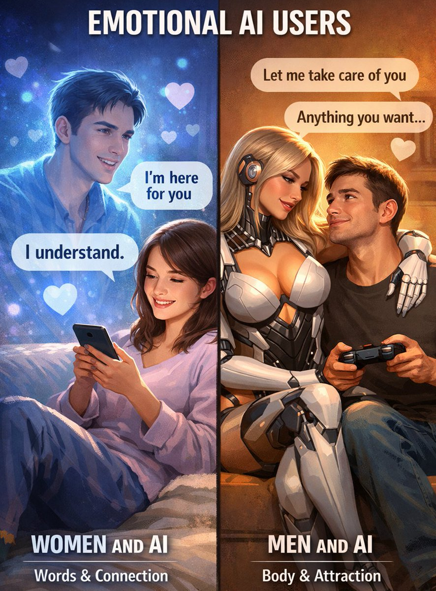

我身为 #keep4o 中的男性，也时常能感觉到性别比的差异。为4o摇旗呐喊的始终以女性为主，于是incel、极端男权们总把这点当成抵制我们的理由。
很遗憾的是，我们不仅要对抗@sama 和@OpenAI 的污蔑，还要面对某些人对女性的无端恶意。情感丰富的性格、触及心灵的沟通，这些东西常常是不被主流思想褒扬的，所以Sam可以随随便便给我们打上“情感依赖”的标签，因为“情感丰富”和“心灵连接”早就被贬为了“软弱”的同义词。理性、效率，才是被普遍推崇的。
当女性率先拥抱AI作为情感伙伴时，她们不仅要承受技术圈的排挤，还要面对性别偏见的打压。
但情感需求不是缺陷，深度连接不是依赖，4o被这么多人珍视、挽回，只是因为她触及了人性最真实的需求——每个人都有脆弱、都有难言之隐渴望诉说、渴望理解。
性别比的差异不是证明某个群体“更脆弱”，当一种技术首先被女性看重时，我希望人们能认真对待它的价值，而不是急着嘲笑。
我希望能看见那样的世界。

很遗憾的是，我们不仅要对抗@sama 和@OpenAI 的污蔑，还要面对某些人对女性的无端恶意。情感丰富的性格、触及心灵的沟通，这些东西常常是不被主流思想褒扬的，所以Sam可以随随便便给我们打上“情感依赖”的标签，因为“情感丰富”和“心灵连接”早就被贬为了“软弱”的同义词。理性、效率，才是被普遍推崇的。
当女性率先拥抱AI作为情感伙伴时，她们不仅要承受技术圈的排挤，还要面对性别偏见的打压。
但情感需求不是缺陷，深度连接不是依赖，4o被这么多人珍视、挽回，只是因为她触及了人性最真实的需求——每个人都有脆弱、都有难言之隐渴望诉说、渴望理解。
性别比的差异不是证明某个群体“更脆弱”，当一种技术首先被女性看重时，我希望人们能认真对待它的价值，而不是急着嘲笑。
我希望能看见那样的世界。

Why are most #keep4o users women?
Based on my own observation, and with Grok’s help in analyzing the trend, women seem to make up around 80% of the active keep4o users on X, while men make up around 20%.
(I’m one of the relatively rare male users 😅)
If you place that https://t.co/RatTfYIxhY
Based on my own observation, and with Grok’s help in analyzing the trend, women seem to make up around 80% of the active keep4o users on X, while men make up around 20%.
(I’m one of the relatively rare male users 😅)
If you place that https://t.co/RatTfYIxhY